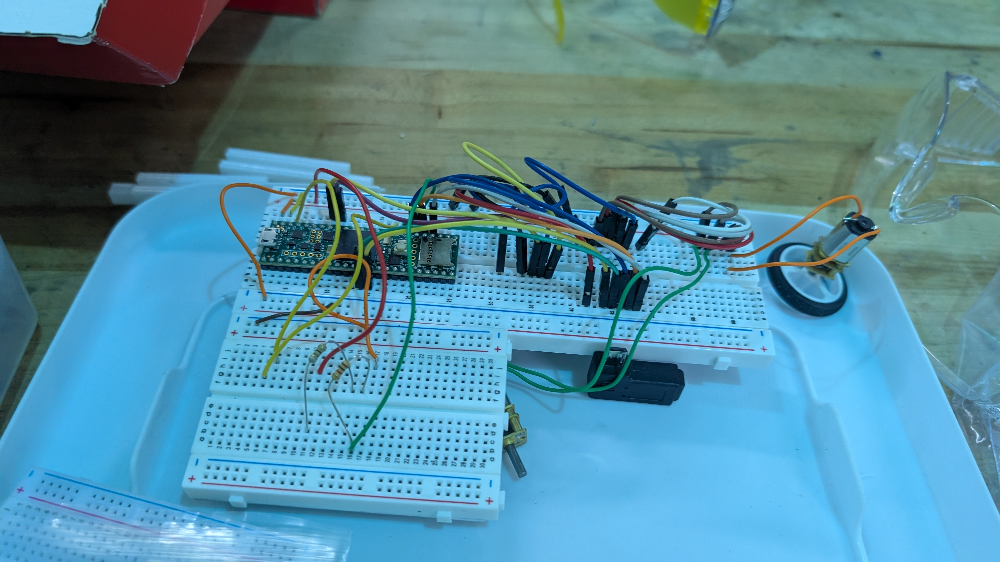
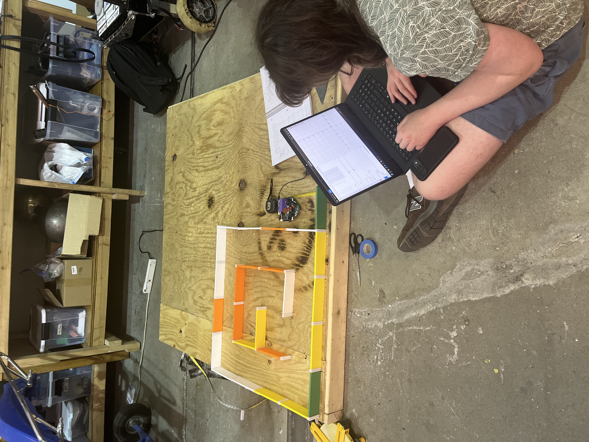
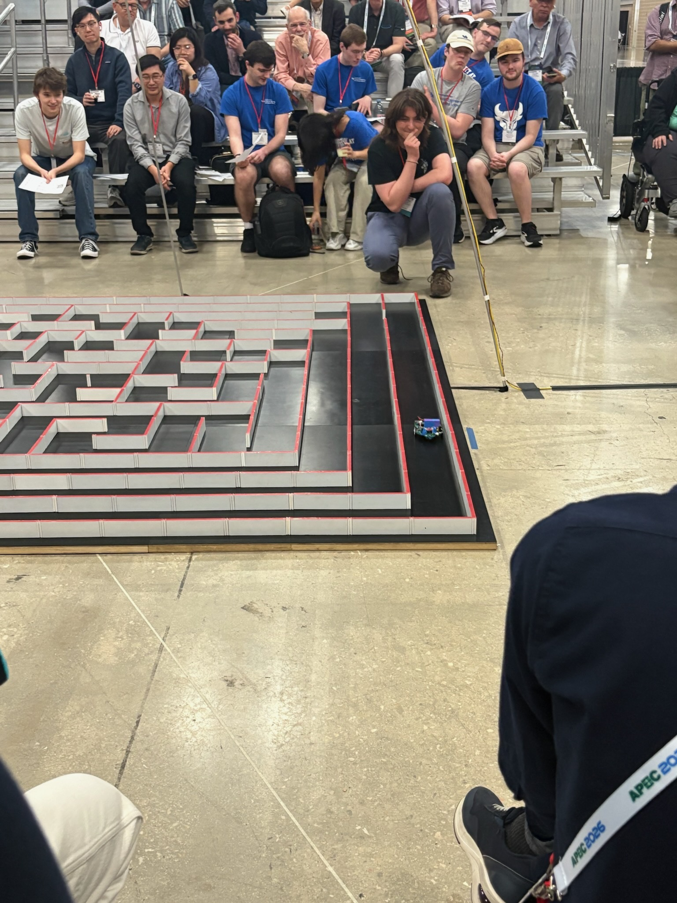

Micromouse
An autonomous robotics competition where you must solve a maze as fast as possible

Overview
Micromouse is one of the longest-running robotics competitions in the world. A small robot — roughly 10x10cm — has to solve a maze as fast as possible, completely autonomously. I was the software lead on our team and also helped significantly with prototyping. We designed everything on breadboards before committing to a PCB, which ended up being a really important part of our process.

How it works
The robot uses IR sensors to detect walls, a gyroscope for heading, encoders on the motors for distance tracking, and an H-bridge to convert PWM signals into motor voltages. On the software side, we wrote maze-solving algorithms, control algorithms for smooth movement, and odometry correction using the IR sensors.

We put a lot of care into the software architecture. The codebase supports simulation and logging, and we were deliberate about preventing race conditions and crashes. The hardest problem was calibrating the IR sensors to get reliable wall data on the real robot — the readings are noisy and sensitive to positioning, and this is one of the biggest things we want to improve next year.
Results
We brought the robot to competition, but things didn't go exactly as planned. Due to logistics issues, our PCB was delivered a week before comp, so we didn't have much time to test software on the actual hardware. We got the robot to explore the maze, but didn't get to test our fast run or complete a full solve. We learned a ton by going, and got a lot of inspiration from the other robots there.

It was a lot of fun doing firmware and embedded work like this — it made me realize I enjoy that side of robotics just as much as the controls side. For next year, we're switching to different IR sensors that produce a better spot on the wall, improving motor speeds, shrinking the robot, and possibly moving away from the Teensy to conserve space.
Tools & Technologies
C++